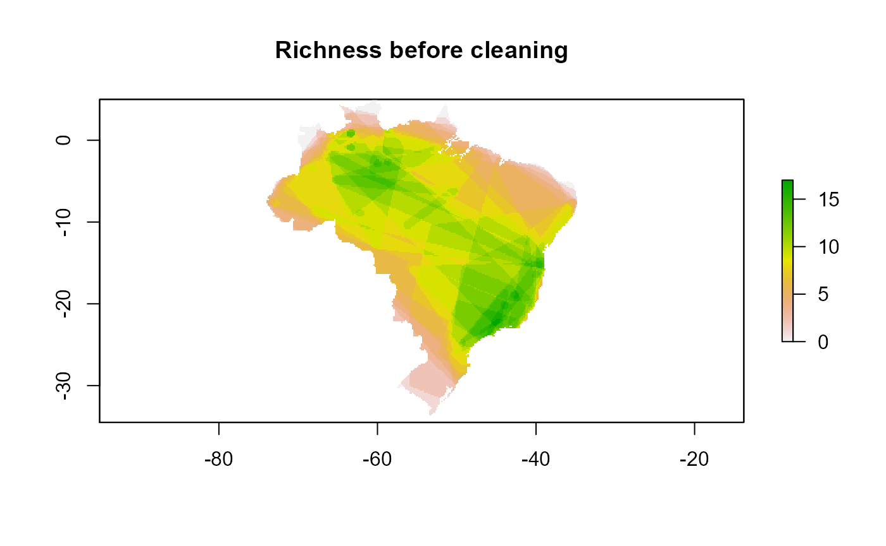

vignettes/natutaList_clean_eval_vignette.Rmd
natutaList_clean_eval_vignette.RmdIn this article we will show how naturaList package can be used to process large dataset of species occurrence records. Specifically we will show how we can filter occurrence data accordingly to a list of specialists and compare the effect of the filtering process regarding the differences in area of distribution of species, richness and the niche space before and after the filtering process.
Before read this article, it is important to see the Introduction to naturaList.
This evaluation of cleaning procedure is done mainly through the use of clean_eval() function. So, in summary, in this article you will learn how to:
clean_eval() function;For this article the user must load or install the following packages:
library(naturaList)
library(raster)
library(rnaturalearth)
library(dplyr)
# Warning: package 'dplyr' was built under R version 4.0.5We will use occurrence data of the fern genus Cyathea in Brazil, that comprises a group of fern species. This dataset is available in the {naturalist}. We used this dataset to exemplify how to use a dataset with several species in naturaList.
The list of specialists we will use was derived from the authors of a paper describing the diversity of ferns and lycophytes in Brazil (see ?speciaLists).
Both datasets of occurrence of Cyathea species in Brazil and the specialists of ferns and lycophytes are available in the naturaList. They can be loaded using the following code:
Now, we can use the classify_occ() function to perform the classification process for all species at the same time.
occ.class <- classify_occ(occ = cyathea.br, spec = speciaLists)We can see how many occurrences were classified in each one of the six confidence levels
table(occ.class$naturaList_levels)
#
# 1_det_by_spec 2_not_spec_name 3_image 4_sci_collection
# 831 2199 561 242
# 5_field_obs 6_no_criteria_met
# 17 1We will evaluate the effects of cleaning occurrence data based in the classification made with classify_occ() in both geographical and environmental space. To this purpose we need data on environmental variables. So, we downloaded bioclim variables from worldclim (using the raster package) and select two layers (bio1 and bio12) that represents temperature and precipitation. This raster are available as the r.temp.prec data in the package. It will be used to calculate the environmental space using the function define_env_space() from naturaList package.
# load climate data
data("r.temp.prec")
df.temp.prec <- raster::as.data.frame(r.temp.prec)
# Transform occurrence data in SpatialPointsDataFrame
spdf.occ.cl <- SpatialPoints(occ.class[, c("decimalLongitude", "decimalLatitude")])Now that we have data of temperature and precipitation, we can define the environmental space using the function define_env_space() in the naturaList package.
### Define the environmental space for analysis
env.space <- define_env_space(df.temp.prec, buffer.size = 0.05, plot = F)In this function, the environmental variables are standardized by range, which turns the range of each environmental variable from 0 to 1. Then, it is delimited a buffer.size around each point in this space and a polygon is draw to link these buffers. You can play with the value in the buffer.size argument and set the plot = TRUE to visualize the output polygon. The objective with this function is to create a boundary in the environmental space available for the species.
We also need to define the geographical space for comparison before and after the cleaning process.
# delimit the geographic space
# land area
data('BR')Here we will use the function clean_eval() to evaluate the effect of filtering process in two characteristics of occurrence of species: the species distribution, calculated as being the convex hull polygon occupied by a species; and the environmental niche breadth, calculated as being the convex hull polygon obtained from two environmental variables.
Both spatial distribution and niche space are compared between the data before and after the cleaning process. The ratio of area after cleaning and before cleaning in both spatial distribution and niche space are given for each species as one of the results of clean_eval() function.
# filter by year to be consistent with the environmental data
occ.class.1970 <-
occ.class %>%
dplyr::filter(year >= 1970)
# cleaning evaluation process
cl.eval_all <- clean_eval(occ.cl = occ.class.1970,
env.space = env.space,
geo.space = BR,
r = r.temp.prec)
# Warning: package 'sf' was built under R version 4.0.5
# the amount of area remained after cleaning process
area_remained <- cl.eval_all$area The area is a value that range from 0 to 1, in which 0 indicate that none of the area of distribution of the species left after the cleaning process. On the other hand, values of 1 indicate that all the area occupied by a species remains the same after the cleaning process. In this example we cleaned our data to maintain only the occurrence points of species that was identified by a specialist. But it can be altered in the level.filter argument (see ?clean_eval).
If you are working with more than one species, one example of the usage of clean_eval() results is to plot in a map the richness containing in each grid before and after the cleaning process. This can be done with the following code:
rich.before.clean <- rasterFromXYZ(cbind(cl.eval_all$site.coords,
cl.eval_all$rich$rich.BC))
rich.after.clean <- rasterFromXYZ(cbind(cl.eval_all$site.coords,
cl.eval_all$rich$rich.AC))This can be plotted in two maps and compare the effects of filtering process in the richness of community
plot(rich.before.clean, main = "Richness before cleaning")
plot(rich.after.clean, main = "Richness after cleaning")